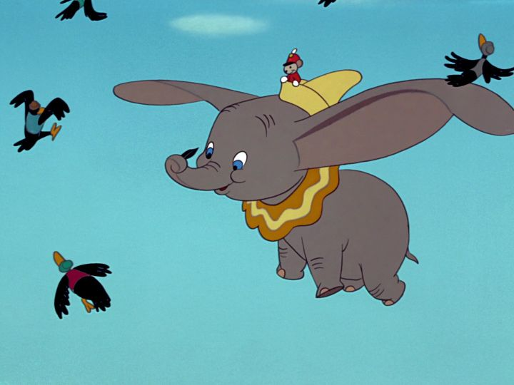

After a string of ambitious early movies, "Dumbo" was probably a start of a slide in Walt Disney Studios' output. It's still a classic for a few reasons, but it also feels a lot less ambitious in content and length (it's barely an hour long). It also protrays a few racial stereotypes, some more obvious than others, that actually warrants a warning message to modern audiences, even if it seemed innoncent and not ill-meaning at the time.The setting of "Dumbo" is the circus, the colorful big-top, the greatest show on Earth. And the theme is bullying and the issues of treating people badly for the way they look. In a sweet opening, we see a series of animals receiving their new babies ("Look Out For Mr. Stork"). Mrs. Jumbo is one elephant eagerly waiting for her new bundle of joy, and after a delayed delivery, receives it, an adorable bably elephant she names Jumbo Jr. The other elephants are equally excited, until they see Jumbo Jr.'s enourmous ears, each bigger than the baby itself. The gabbing girls immediately make fun of him and shun him, giving him the nickname "Dumbo," which continues to stick. If you, the viewer, refered to the lead character as "Dumbo," than you to have been a terrible bully and should be ashamed! Calling the character Jumbo Jr. is a bit of a mouthful though, so I'll stick with Dumbo anyway.Mrs. Jumbo is probably one of the greatest mothers in the Disney canon, having an important presence throughout the movie and as a motivator to baby Dumbo. Regardless of his ears, Mrs. Jumbo is wholly loving. Neither her or Dumbo have virtually any dialogue in the movie, but their connection is fully realized. When a human circus-goers go to far in teasing Dumbo, to the point of endangering him, Mrs. Jumbo lashes out like any good mother would, but the act puts her in a cage by the circus owners, far away from Dumbo. The baby is alone, shunned by the other elephants. It's a harsh and cruel world of endless bullying for the poor elephant, perhaps to the point of it being too sad to watch. Thankfully, Timothy the mouse steps in as Dumbo's sidekick, friend and supporter. The street-wise mouse watched from afar, and took it upon himself to cheer Dumbo up. His character repeats what Jiminy Cricket was in "Pinocchio," and does so successfully, making the movie much more approachable as a light in the dark world. His plan for Dumbo is primarily to stage a new act, something that makes Dumbo the star: with such unique ears, surely they could be an opportunity instead of a hinderance! This is easier said than done, since Dumbo is barely a week old, and his struggle pertains to the general harsh world of the circus and showbusiness.  "Dumbo" is certainly a harsh and unforgiving movie. It's merits come partially from that sadness, especially from a locked up mother and her child missing each other (their scene during the song "Baby of Mine" is one of the saddest I can recall from Disney). The other main feature are the memorable songs, each of which were featured favorably in Disney soundtracks, and give me a sense of nostalgia. The movie's general simplicity also helps the movie cater better to very young viewers. There are some odd points in the movie. For example, the infamous "Pink Elephants on Parade" sequence, when Dumbo and Timothy accidently get drunk on alcohol. And there's the crows that help Dumbo learn to fly: its obvious as an adult that they are Black-stereotypes, but since the characters are so much fun, and since they're basically heroes in the story, my feelings on them are mixed (some prominent Black community members have spoken in favor of the characters in recent years). The story also ends rather abruptly, with only five minutes from Dumbo learning that, yes indeed, his large ears allow him the unique ability to fly, to resolving every plot point and becoming the hero of the circus. It's an efficient ending, and not much more needed to be added, but I'm sure the film's runtime could have been extended there.There's a lot of iconic moments in "Dumbo" that make it a true classic. There's a lot of mean-spirited elements driving the story though, so it's understandable to see why it might not be for everyone.
- "Ani" More reviews can be found at : https://2danicritic.github.io/ Previous review: review_Drifters Next review: review_Dusk_Maiden_of_Amnesia